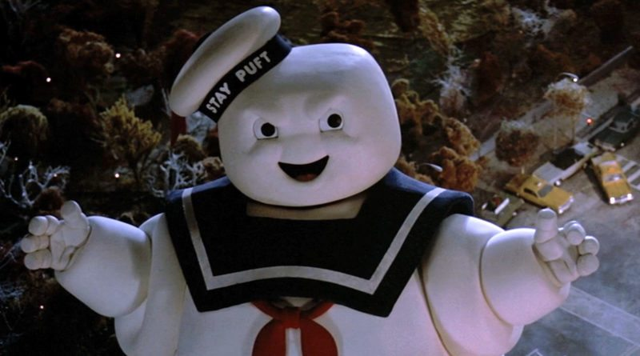

OK, so, the topic of the day is giant movie monsters. The means we've gotta wheel out the classics like Godzilla, King Kong, and Mothra, but let's also try and show a little love to some of the lesser known giant monsters too.
First and foremost, let's define what we're considering giant movie monsters. Obviously creatures large enough to level cities are included, but what about more modest creatures? Like the humble genetically-engineered T-Rex from Jurassic Park? Clearly the T-Rex should be considered a movie monster, and it is certainly giant. No one can deny that. I'm going to go ahead and say... in order to be considered a "giant" movie monster, the monster in questions must at least be the size of a Rancor (that big monster that hangs out in Jabba the Hutt's murder pit from Return of the Jedi)
If Buzzfeed and Cracked have taught me anything, it's that lists are extremely fashionable. So let's jump on that bandwagon!
And that's it for the list. What? What're you looking at me for? Did you actually think I was going to list every movie monster ever? C'mon, I'm tired. I've got a headache. Another night, I promise, just not right now. Fine. Here's a picture of my personal favorite movie monster.
This picture was shamelessly stolen from Epictimes
Also, check out this neato navigation thingamajig! There's only two links, don't get too excited.
So taking a look at this other website, what makes it good (other than writing quality of course) is the layout of it, the use of background colors, navigation being put right on top, and the general aesthetics of the webpage. I also notice that the navigation they have uses dropdown menus. So would that make the bar on top a form with multiple select elements, with each option being a link? Maybe selecting one of the options also triggers a submit, which then links you to the specified page. Or maybe it's something we haven't covered yet.
The very beginning of the source code seems to have a lot of if statements, some pretaining to what internet browser the visitor is using (or so I assume), and some that are dealing with advertisements on the page. Maybe for what to do for different screen sizes? As far as things I do recognize, there are a number of unordered lists, with list items in them along with links to other pages on the site, and it looks like the search box on the site is a kind of form, with the submit button labelled as search.